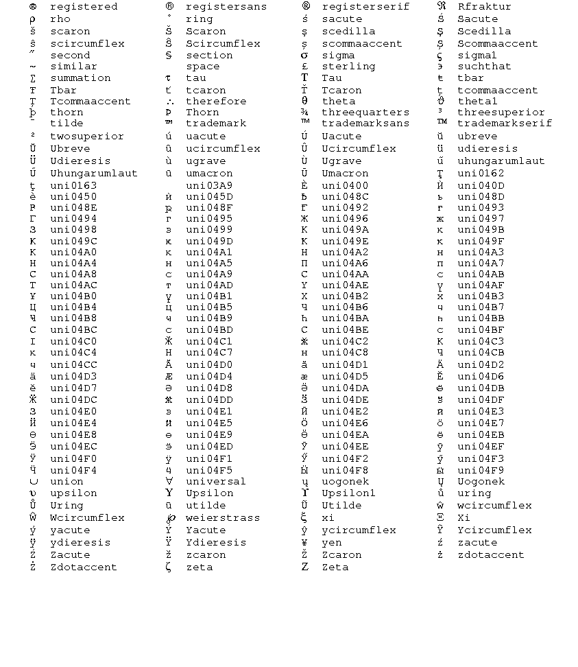

<-- previous page Table of Contents Index next page -->
Text strings are used in many different ways.
A text string is enclosed in double quotes,
and can contain any combination of letters, numbers, spaces,
and punctuation.
It can contain a \n to indicate a newline or \b to indicate a backspace,
but otherwise cannot contain tabs or other
control characters. If you want a double quote mark inside a string, it
has to be preceded by a backslash, to indicate it is not ending the string:
"A \"word\" in quotes"
If you want an actual backslash in a string, it must be entered as two backslashes.
You can concatenate strings with a + sign. Thus the following are equivalent:
"this is a string" "this is " + "a string"
A string can also contain special music characters. These are specified by \(xxx), where the xxx is a code from the following table:
gclef G clef (treble clef) fclef F clef (bass clef) cclef C clef (used for alto clef, tenor clef, etc.)
com common time cut cut time
flat flat dblflat double flat sharp sharp dblsharp double sharp nat natural
dn2n half note with stem down dn4n quarter note with stem down dn8n eighth note with stem down dn16n 16th note with stem down dn32n 32nd note with stem down dn64n 64th note with stem down dn128n 128th note with stem down dn256n 256th note with stem down up2n half note with stem up up4n quarter note with stem up up8n eighth note with stem up up16n 16th note with stem up up32n 32nd note with stem up up64n 64th note with stem up up128n 128th note with stem up up256n 256th note with stem up upflag upward flag dnflag downward flag
4n quarter (and shorter) note head 2n half note head 1n whole note dblwhole double whole note xnote X-shaped note head diamond open diamond-shaped note head filldiamond filled diamond-shaped note head dwhdiamond double whole diamond-shaped note isostriangle open isosceles triangle notehead fillisostriangle filled isosceles triangle notehead dwhisostriangle double whole isosceles triangle notehead piewedge open piewedge notehead fillpiewedge filled piewedge notehead dwhpiewedge double whole piewedge notehead rectangle open rectangle notehead fillrectangle filled rectangle notehead dwhrectangle double whole rectangle notehead righttriangle open right triangle notehead fillrighttriangle filled right triangle notehead dwhrighttriangle double whole right triangle notehead urighttriangle upside-down open right triangle notehead ufillrighttriangle upside-down filled right triangle notehead udwhrighttriangle upside-down double whole right triangle notehead semicircle open semicircle notehead fillsemicircle filled semicircle notehead dwhsemicircle double whole semicircle notehead slashhead open slash notehead fillslashhead filled slash notehead dwhslashhead double whole slash notehead blankhead blank notehead
qwhrest quadruple whole rest dwhrest double whole rest 1rest whole rest 2rest half rest 4rest quarter rest 8rest eighth rest 16rest sixteenth rest 32rest thirty-second rest 64rest sixty-fourth rest 128rest 128th rest 256rest 256th rest
begped begin pedal mark endped end pedal mark pedal pedal up/down mark
tr trill mor mordent invmor inverted mordent turn turn invturn inverted turn
ferm fermata
uferm upside-down fermata
acc_gt accent like a greater-than sign
acc_hat accent like a "hat" or ^ (circumflex or "up-arrow")
acc_uhat accent like an upside down hat
leg legato mark
dot dot
wedge wedge
uwedge upside-down wedge
sign sign for D. S.
coda coda mark
upbow up bow
dnbow down bow
rr "railroad tracks" or caesura (2 slanted lines sometimes put
at the top of a staff to indicate the end of a musical thought)
measrpt measure repeat
copyright C-in-circle copyright symbol
dim diminished
halfdim half diminished
triangle triangle
Any of these music character names can be prefixed by "sm" to indicate a smaller version of the character. For example, "smup4n" is a small quarter note, as might be used for a "cue" note. Small music characters are 0.65 times as big as regular characters.
Various non-ASCII characters can be included in text strings. If you have a non-United States keyboard which can produce characters listed in the table below from the "Latin-1" alphabet, you can simply type them into strings as you normally would. If you want a character that your keyboard does not support, you can put them in strings by using their names in a manner similar to the music characters. For example, you can include an 'a' with an acute accent on it in a string by using \(aacute), or an upside down question mark using \(questiondown).
There are 2-character shortcut names for many of the letters with diacritical marks. The shortcut names consist of the letter and a character representing the diacritical mark. So, for example, \(aacute) can also be specified by just \(a'), \(Egrave) can also be specified by \(E`), \(ntilde) can be specified as \(n~), and \(Ocircumflex) can be specified as \(O^). The following table lists the diacritical mark names, their shortcut symbols, and the list of available shortcut names using those symbols:
| acute | ' | A' a' C' c' E' e' I' i' L' l' N' n' O' o' R' r' S' s' U' u' Y' y' Z' z' |
| breve | ( | A( a( E( e( G( g( I( i( O( o( U( u( |
| caron | v | Cv cv Dv dv Ev ev Lv lv Nv nv Rv rv Sv sv Tv tv Zv zv |
| cedilla | , | C, c, S, s, |
| circumflex | ^ | A^ a^ C^ c^ E^ e^ G^ g^ H^ h^ I^ i^ J^ j^ O^ o^ S^ s^ U^ u^ W^ w^ Y^ y^ |
| dieresis | : | A: a: E: e: I: i: O: o: U: u: Y: y: |
| dotaccent | . | C. c. E. e. G. g. I. A. z. |
| grave | ` | A` a` E` e` I` i` O` o` U` u` |
| macron | - | A- a- E- e- I- i- O- o- U- u- |
| ogonek | c | Ac ac Ec ec Ic ic Uc uc |
| ring | o | Ao ao Uo uo |
| slash | / | L/ l/ O/ o/ |
| tilde | ~ | A~ a~ I~ i~ N~ n~ O~ o~ U~ u~ |
There are also a few special case shortcut names:
| germandbls | ss |
| qoutedblleft | `` |
| quotedblright | '' |
| guillemotleft | << |
| guillemotright | >> |
The following charts list the full names of all of the available named characters, and shows what they look like.

One of the special characters is specified by \(space). This character appears as a normal space on output, but is not treated like a space when Mup is looking for word or syllable boundaries. The most common use for this is probably in lyrics when you want several words to be sung on a single note. Another use would be in cases where Mup would normally split up a long string between words in order to avoid running off the edge of a page, but you want to prevent that split.
Strings can also contain special codes to indicate changes in font or size. The font codes begin with \f, and can either be spelled out, as in the first column of the table below, or as the abbreviations given in the second column.
Code Abbr Meaning
\f(avantgarde rom) \f(AR) Avant Garde roman font
\f(avantgarde bold) \f(AB) Avant Garde bold font
\f(avantgarde ital) \f(AI) Avant Garde italic font
\f(avantgarde boldital) \f(AX) Avant Garde bold-italic font
\f(bookman rom) \f(BR) Bookman roman font
\f(bookman bold) \f(BB) Bookman bold font
\f(bookman ital) \f(BI) Bookman italic font
\f(bookman boldital) \f(BX) Bookman bold-italic font
\f(courier rom) \f(CR) Courier roman font
\f(courier bold) \f(CB) Courier bold font
\f(courier ital) \f(CI) Courier italic font
\f(courier boldital) \f(CX) Courier bold-italic font
\f(helvetica rom) \f(HR) Helvetica* roman font
\f(helvetica bold) \f(HB) Helvetica bold font
\f(helvetica ital) \f(HI) Helvetica italic font
\f(helvetica boldital) \f(HX) Helvetica bold-italic font
\f(newcentury rom) \f(NR) New Century roman font
\f(newcentury bold) \f(NB) New Century bold font
\f(newcentury ital) \f(NI) New Century italic font
\f(newcentury boldital) \f(NX) New Century bold-italic
\f(palatino rom) \f(PR) Palatino roman font
\f(palatino bold) \f(PB) Palatino bold font
\f(palatino ital) \f(PI) Palatino italic font
\f(palatino boldital) \f(PX) Palatino bold-italic font
\f(times rom) \f(TR) Times* roman font
\f(times bold) \f(TB) Times bold font
\f(times ital) \f(TI) Times italic font
\f(times boldital) \f(TX) Times bold-italic font
\f(previous) \f(PV) previous font
\f(rom) \f(R) change to roman in the current family
\f(ital) \f(I) change to italics in the current family
\f(bold) \f(B) change to bold in the current family
\f(boldital) \f(X) change to bold italics in the current family
Some of the
special characters
look better in some fonts than others. We have found that
a few older PostScript interpreters unfortunately don't always
implement all the special characters in all fonts, so if you have
one of those, you may want to see if a newer version is available
that corrects the problem.
If you need a font other than those Mup supports directly, it is possible to override Mup's builtin fonts with other fonts. This is described later in the section on "Installing other fonts."
The point size can also be changed. (A "point" is about 1/72 of an inch.)
Code Meaning \s(N) change to point size N \s(+N) increase point size by N points \s(-N) decrease point size by N points \s(PV) or \s(previous) revert to previous sizeThe point size can range from 1 to 100. A font or size change will last until changed or until the end of the string. Any subsequent strings will begin with default font and size values, except in the case of lyrics, where font and size information is maintained separately for each staff and verse, and carried forward from measure to measure, and rehearsal marks, where the information is also carried forward. The default values can be set as described in the "Parameters" section. The music symbols are affected by size changes. If a music symbol follows italics or bolditalics characters, it will be made italics to match.
Here are some examples of strings:
"hello" "( \(up2n) = 100 )" "\f(TB)this will be bold. \f(TI)this will be italics" "A \f(TX)\s(+12)BIG\f(PV)\s(-12) word" "\f(newcentury boldital)Allegro"
It is also possible to specify a string that takes up more than one line,
by putting a "\n" where you want to move to a new line. The place where
this is most likely to be useful is for
staff labels,
which you may want
to make multi-line, to keep them from becoming excessively wide.
For example:
"Violins\nI&II"
A "\b" can be used to specify a backspace. This might be useful for adding underlines to text. If you wish to use letters with diacritical marks, you will probably want to use the special characters, described earlier in this section, rather than trying to construct them using the plain letter, a backspace, and the mark.
You are not allowed to back up to before the beginning of a line. Note that in all fonts except Courier, different characters have different widths, so using backspaces can be a bit tricky. For example, underlining a 5-letter word might require more than 5 underscores, if the characters in the word are wider than an underscore character. In general, it works better to enter an entire string, then backspace to add underscoring or accents, rather than doing them along the way. For example, "My\b\b___" will line up much better than "M\b_y\b_".
Vertical motion within a string can be specified using "\v(N)" where N is some percentage of the current font height. The distance may be negative for downward motion or positive for upward motion, ranging from -100 to 100. This might be used for creating superscripts and subscripts, although the next section describes an alternate way of doing that which is usually better. It might also be used just to line something up differently than Mup normally would. You cannot put newlines (with \n) in the same string with vertical motion.
It is also possible to "pile up" lines of text in a string.
Some common uses of this could be for superscripts and subscripts or for
figured bass notation.
Some facilities to specifically deal with
figured bass
will be described in a later section, but
here we describe the general-purpose constructs for piling text.
A \: is used to indicate the beginning of piling. Any subsequent
instances of \: in the same string will alternately turn piling off and on.
When a pile is begun, the text size is automatically made smaller, and
the text baseline is moved up, so that the first line of piled text is
like a superscript, and the next like a subscript. If there are additional
lines, they are placed below the subscript.
By default, the lines in a pile are placed such that the last digit
in each line all line up, or if there is no digit, the last character.
However, you can force different alignment.
A \| will force alignment at that point, or a \^ will force alignment
at the center of the following character. A maximum of one alignment marker
can be specified on each line of a pile.
You cannot put newlines (with \n) in the same string with piling.
A new line of the pile is started at each <space> character in the input string.
If you want an actual literal space inside a piled line, it must be
preceded with a backslash. As an example:
"Text\:superscript subscript\: back to normal."; "This pile \:has\ literal spaces\ in\ it."; "This pile \:h\^as align\|ment spec\^ified.";
Another thing which is common in figured bass notation
is to draw a slash through a number. Again, the section on
figured bass
will describe how to do that inside figured bass,
but it is possible to put a slash through a number elsewhere by
placing a backslashed slash after a number, like this:
"6\/" "10\/"
You can cause the text to be
printed inside a box by placing a \[ at
the beginning of the string and a \] at the end of the string.
Similarly you can cause text to be placed inside a circle (or ellipse
for strings that are wide) by placing a \{ at
the beginning of the string and a \} at the end of the string.
Boxed or circled text are not allowed in
lyrics.
"\[This is in a box\]"
"\{This is in an ellipse\}"